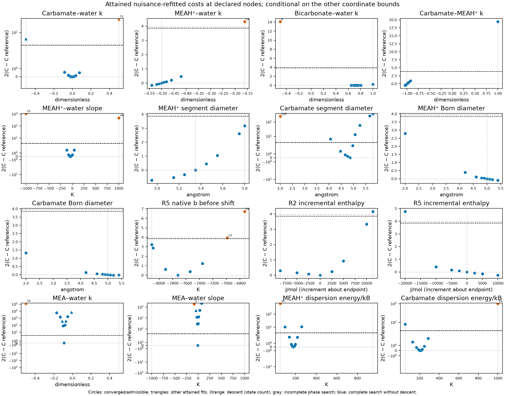
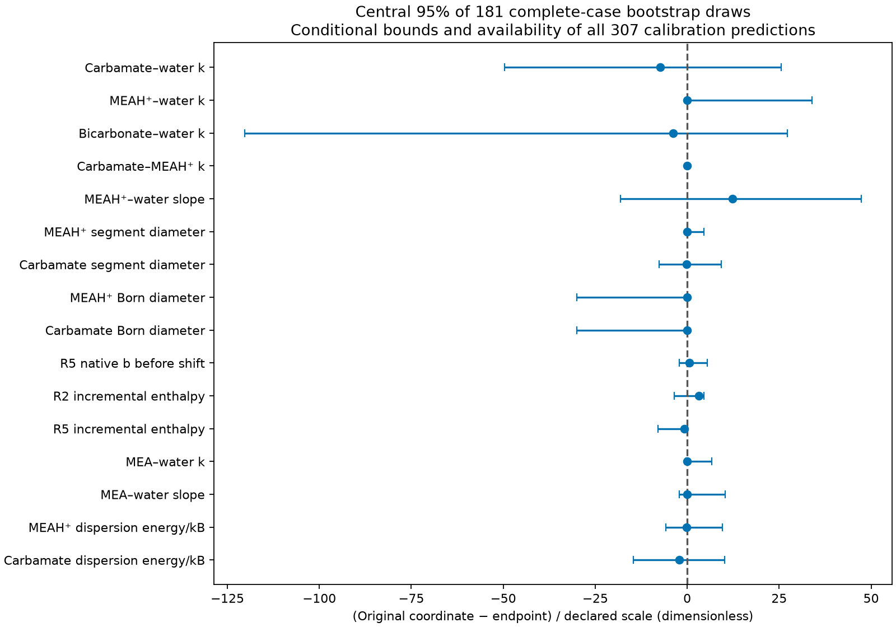
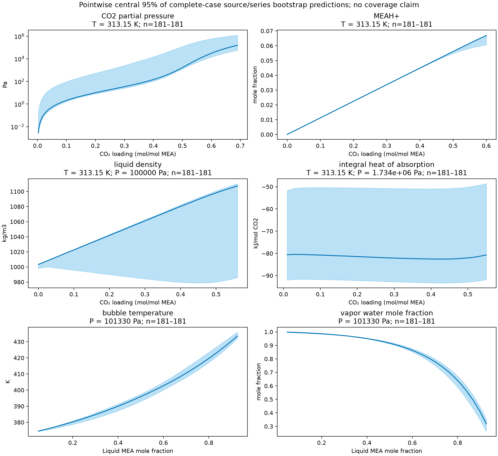

Which MEA coordinates are constrained by the 307 observations?
This study examines parameter identification and conditional uncertainty for the retained aqueous MEA–CO₂ model. It provides calibration sensitivity, source/series resampling, model predictions and numerical verification. It does not provide independent physical validation, structural-identifiability proof, parameter adoption, or absorber/stripper qualification. The accepted design in #262 defines the finite calculations and their interpretation. Design readiness was reviewed Ready; delivered evidence has not yet been independently reviewed or promoted for manuscript use.
Each historical active bound admits a lower-cost tested excursion
All 156 declared profile nodes were attempted: 144 converged, eight reached the approved fit-time limit, and four had unavailable 307-row starting evaluations. Every usable endpoint, including the eight time-limited ones, received all 162 frozen phase states. The 24,624 state–endpoint calculations contain 221,616 actual native trials and include 478 cases with detected descent and 24 incomplete cases. Their locations and raw native evidence are retained; incomplete cases are not counted as stable.
Each of the six historical active bounds has a separate converged excursion with lower cost, zero detected descent states out of 162 and no incomplete phase states:
| Coordinate | Historical active limit | Tested fixed value | Replayed cost \(C\) | \(\Delta C\) |
|---|---|---|---|---|
| MEAH⁺–water interaction | −0.50 | −0.54 | 148.800004 | −0.078936 |
| Carbamate–MEAH⁺ interaction | −1.00 | −1.04 | 148.638379 | −0.240560 |
| MEAH⁺ segment diameter (Å) | 5.35 | 4.95 | 148.510889 | −0.368050 |
| MEAH⁺ Born diameter (Å) | 5.00 | 5.40 | 148.832097 | −0.046843 |
| Carbamate Born diameter (Å) | 5.00 | 5.40 | 148.870044 | −0.008895 |
| R5 total enthalpy shift (kJ/mol) | +10.0 | +20.0 | 148.751472 | −0.127468 |
Interaction coefficients and costs are dimensionless. The R5 excursion is a +10 kJ/mol increment about the inherited +10 kJ/mol total shift. These are one-coordinate excursions with the other fifteen refitted under their historical nuisance restrictions. The prescribed diagnostic does not support treating these six historical limits as data-active at the tested excursions. It does not establish a simultaneously widened admissible box or global phase stability.
The reference cost is not a minimum of the enlarged profile problems. Negative differences remain retained, and likelihood-interval interpretation is withheld. The finite cost shapes, observed coupling, numerical failures and detected instability still inform the coordinate recommendation.
Why a single-start excursion can lie below the reference
The reference \(C_*\) is a minimum inside the historical bound box, with these six coordinates held on their limits. It is not a minimum along any of these coordinates once its limit is removed. The retained conditional-uncertainty record already shows this at the reference: for all six active coordinates the cost gradient points out of the box (active_bound_outward_descent is true for each). At the reference the other fifteen coordinates are at their optimum, so the slope of the profile (the refitted cost as a function of the held coordinate) equals that partial derivative there. Each profile therefore starts downward out of the box, with first-order change \((\partial C/\partial\theta)\,\Delta\theta\). This is a statement about the refitted cost only. With the other coordinates left at their reference values the cost rises steeply. The retained starting costs at the held node, before any refit, are 216.54 at 4.95 Å MEAH⁺ segment diameter, 203.20 at MEAH⁺–water \(k=-0.54\), 188.00 at a +10 kJ/mol R5 increment and 149.81 at carbamate–MEAH⁺ \(k=-1.04\), all above \(C_*\). The lower costs come from the refit.
The attained profile costs follow the first-order profile slope for the small steps (full list in the retained tables):
| Excursion | Step \(\Delta\theta\) | Reference \(\partial C/\partial\theta\) | First-order \(\Delta C\) | Attained \(\Delta C\) |
|---|---|---|---|---|
| MEAH⁺–water \(k\) to −0.54 | −0.04 | 1.989 | −0.0795 | −0.0789 |
| Carbamate–MEAH⁺ \(k\) to −1.04 | −0.04 | 6.245 | −0.2498 | −0.2406 |
| MEAH⁺ segment diameter to 4.95 Å | −0.40 Å | 1.939 Å⁻¹ | −0.7754 | −0.3681 |
| MEAH⁺ Born diameter to 5.40 Å | +0.40 Å | −0.1339 Å⁻¹ | −0.0536 | −0.0468 |
| Carbamate Born diameter to 5.40 Å | +0.40 Å | −0.0747 Å⁻¹ | −0.0299 | −0.0089 |
| R5 enthalpy increment +10 kJ/mol | +10000 J/mol | −1.485×10⁻⁵ mol/J | −0.1485 | −0.1275 |
The largest decrease, the MEAH⁺ segment-diameter excursion to 4.95 Å (\(C=148.510889\) against \(C_*=148.878939\)), is about half its first-order value because the profile curves over a 0.4 Å step. It is a finding about the bound box, not a new parameter estimate. The excursion is one coordinate at a time, used one endpoint nuisance start, and was not checked for a lower minimum elsewhere. Its 4.95 Å value is not proposed for adoption. Any enlarged box must be refitted jointly with phase stability in #255 stage 2.
Basis and meaning of the calculations
All calculations start from the retained endpoint, SHA-256 00e77608a8489fc9e03a7d2a86c08cb5ff782bb441368a62fa6390b8bfe9cc91, using the 307 observations, weights, equilibrium tolerance, continuation declarations, thermal inputs, reaction domains and standard states owned by MEA.toml. The sixteen original coordinates, units, ties, endpoint values, historical nuisance restrictions and 156 exact scan nodes are retained in coordinates.json. A profile fixes one coordinate and refits the other fifteen from the endpoint nuisance start. It establishes an attained local cost, not a global minimum.
The dimensionless weighted least-squares cost is
\[C(\theta)=\tfrac12\sum_{i=1}^{307} w_i r_i(\theta)^2.\]
The retained reference is \(C_*=148.87893934557388\). Both \(\Delta C=C-C_*\) and \(2\Delta C\) are retained. The owner-approved approximate one-coordinate comparison is \(2\Delta C=3.84\), or \(\Delta C=1.92\). With \(s^2=2C_* /(307-16)=1.0232229508286865\), the second comparison is \(2\Delta C=3.929176131182156\). These are conditional on the chosen weights, residual independence and fixed model inputs. Active bounds and a finite, single-start search preclude a claim of calibrated 95% coverage. Crossings are brackets between evaluated nodes. Failed fits and untested intervals establish neither a crossing nor a flat profile.
Original reaction-coordinate accounting is separate from completed-law transport. The R5 coordinate is the native natural-log coefficient \(b=-7723.098885755592\) K before incremental enthalpy-shift composition; it is not the completed coefficient after a nuisance shift. The inherited total R2 and R5 enthalpy shifts are −1363.931574116721 and +10000 J/mol. Reported incremental coordinates are relative to these inherited values. For both MEAH⁺ and carbamate, the segment, packing and Debye–Hückel diameters retain the ratio 1:0.88:1; their Born diameters remain separate coordinates. Reaction domains and standard states remain those of each destination observation.
Historical bounds are numerical restrictions, not measured physical priors. Segment and Born diameters are in ångström; dispersion energies divided by Boltzmann’s constant and reciprocal-temperature interaction slopes are in kelvin. Interaction coefficients are dimensionless. Reading the MEA-owned declaration \(k(T)=A+B(1/T-1/T_{\rm ref})\) at 293.15 and 436.85 K bounds this law on that positive-temperature interval. The \(k\leq1\) diagnostic means nonnegative unlike dispersion attraction; it does not establish phase stability. Every candidate receives the owner-authorized native constant-law equivalence and perturbation-sensitivity checks. Only fixed-temperature residual chemical potentials are compared; temperature derivatives and caloric properties are excluded from this equivalence check.
Each usable profile endpoint receives the existing native phase calculation at all 162 frozen states with nine starts each, using fitted EOS parameters and completed reaction laws. The states span 313.15–393.15 K and loading \(10^{-5}\)–0.6 mol CO₂/mol MEA at 0.50, 0.80 and 0.95 of the retained endpoint bubble pressure. Detected descent, incomplete search and attained cost are separate quantities. Zero detected descents is a finite-search finding, not proof of global stability. Bootstrap predictions do not receive this phase search and can include imposed single-liquid calculations below their predicted bubble pressure.
Dependence and resampling
blocks.json maps every observation to its source, experimental series and physical state with provenance: ten sources and nineteen series. The mixed common-149 objective is not treated as one experiment. Each of 200 seed-262 draws samples ten source occurrences uniformly with replacement; each source occurrence then samples its own number of series uniformly with replacement. Every selected series is retained completely. Properties belonging to the same physical state have equal multiplicity, and multiplicities accumulate when a source or series is drawn repeatedly. No observation-level resampling is introduced.
The bootstrap objective is
\[C^{(b)}(\theta)=\tfrac12\sum_i m_i^{(b)}w_i r_i(\theta)^2.\]
Every fit’s native initial cost is checked against an independently evaluated objective with those exact multiplicities. The full sixteen-coordinate historical bound box remains in force. Failed draws are retained without replacement. Parameter spreads therefore describe the frozen bounded estimation procedure. They do not estimate uncertainty outside that box or propagate uncertainty in fixed chemistry, thermal inputs, source corrections or the model form.
Each usable converged draw is replayed on the same 307 calibration observations. The reported pressure AARD uses exactly 47 PartialPressure observations; the reported species AARD uses exactly 94 PhaseMoleFraction observations. Here AARD is \(100N^{-1}\sum_i |y_i^{\rm model}/y_i^{\rm observed}-1|\) in percent. Other source/property memberships are reported separately. These are distributions of calibration errors across resampled fits, not out-of-sample validation errors.
curve-states.json freezes 785 physical grid states from the reported curves: 365 pressure, 140 speciation, 132 density, 84 heat and 64 MEA–water states, preserving every associated quantity and unit. The existing curve calculation owner evaluates each draw. Pointwise 2.5%, median and 97.5% summaries use only available finite predictions and retain their own successful denominators; they are not simultaneous confidence bands. First-100 versus full-200 changes describe finite resampling precision, not convergence of percentile estimates.
Numerical reference checks
The task-local approved Engine wheel is from merged commit e6dae5c7353ae10e0aa2d8e46055847b9d64bbe4, SHA-256 83ede7d2722d3581603f6e4139c614b8bbfc903ce90609c90b802d46eea77dd6. Its installed package bytes match the wheel. The main checkout’s pin is unchanged. This amendment resolves the earlier R5 tied-declaration temperature-domain conflict; no Engine source was modified.
The full reference replay returns all 307 observations with \(C=148.87893934556408\): relative cost difference \(6.58\times10^{-14}\) and maximum relative row-residual difference \(1.263\times10^{-10}\), against the approved \(10^{-8}\) relative limits. The joint coordinate check evaluates all sixteen coordinates and all observations. The R5 hold check gives identical predictions and completed laws for full and reduced coordinate declarations at two nonzero nuisance shifts.
The written/reloaded candidate check retains 307 available predictions at nonzero R2/R5 shifts and a fixed R5 node. Maximum relative prediction difference is \(2.32037\times10^{-13}\) and maximum absolute completed-law coefficient difference is \(1.42109\times10^{-14}\), preserving domains and standard states. This qualifies the existing application-specific completed-law mapping, including native R5 conversion.
The interaction-law qualification retains 96 native comparisons over four pairs, both endpoint temperatures, three pressures and below/at/above-one declarations. Maximum relative equivalence error is zero; minimum response to a \(10^{-3}\) interaction perturbation is \(4.26247\times10^{-5}\) relative, exceeding the \(10^{-7}\) sensitivity floor. Actual floating-point classifications are retained, including nominal-one values represented just below one. The phase reference reproduces 162 states, nine starts per state, zero detected descent states and zero incomplete states.
Native fitting uses 180 iterations, function tolerance \(10^{-6}\), parameter tolerance \(10^{-10}\), gradient tolerance \(10^{-8}\) and a 600 s elapsed-time budget. Every usable returned fit is independently replayed using written/reloaded candidate parameters and completed laws: native cost agreement within \(10^{-8}\) relative, weighted residual agreement within \(10^{-8}\) absolute, and no material worsening of the same-node starting cost. Nonconverged, exhausted, unavailable or interaction-inadmissible fits do not enter interval or percentile inference. No failed draw is silently replaced.
The held-reaction checks qualify candidate export through the existing solvent-specification reaction mapping. Replayed weighted residuals differ from the retained native fits by at most \(1.007\times10^{-11}\) for the checked R2 hold and \(7.910\times10^{-12}\) for the checked R5 hold. The original/reduced coordinate comparisons give identical 307-row predictions and original-coordinate values for the checked R2 hold and positive R5 enthalpy excursion. The correction record identifies fourteen implementation failures that were preserved and rerun after this correction, without changing numerical controls or nuisance restrictions.
The candidate-model comparison checks the curve owner’s default model after replacing its candidate: at 313.15 K, 100000 Pa and CO₂-free MEA mass fraction 0.30, default and explicit candidate calculations both give liquid molar density 43921.294702574254 mol/m³. The old reference model gives 43912.968925653804 mol/m³, a relative difference \(1.896\times10^{-4}\). This verifies that the changed model is consumed; it is not a density validation against measurements.
Published practice and claim limits
The source reading used Baygi and Pahlavanzadeh (2015), §§3–4 and Eq. 11, DOI; Nasrifar and Tafazzol (2010), §§6–7, DOI; Uyan et al. (2015), §§4.1–4.3, DOI; Wangler et al. (2018), §§6.1.2–6.1.4 and 7, DOI; and Albers and Sadowski (2011), §4.1, DOI. The indexed reading copies and current Zotero source attachments were hash-verified during design and independently checked in readiness review.
The MEA ideal-speciation calibration and related MDEA ion-transfer or electrolyte fitting practices do not establish numerical physical bounds for this model’s MEAH⁺ or Born diameters. Albers’ examples of parameter compensation support caution about unique physical interpretation; they do not prove structural nonidentifiability in this MEA model. Historical bounds, observed coupling and finite profile variation retain those distinctions here.
Ten source blocks, nineteen series, historical nuisance restrictions, single local starts, numerical stopping limits, fixed model inputs, possible source bias and model discrepancy limit the uncertainty interpretation. Source-block resampling tests sensitivity to within-experiment dependence; it neither proves independence between sources nor calibrates confidence coverage. Stability-constrained fitting and parameter adoption remain with #255 stage 2 using the Engine #1059 wheel. No recommendation here authorizes adopting a new parameter vector.
Born diameters remain weakly restricted over the tested ranges
Both Born-diameter profiles have nine converged nodes over 2.0–5.4 Å. The attained cost ranges are 148.8321–150.2794 for MEAH⁺ and 148.8654–149.5430 for carbamate. Their largest attained \(2\Delta C\) values, 2.801 and 1.328, are below both declared comparison cutoffs. All 2,916 state–endpoint phase calculations complete without detected descent. These are broad finite scans with conditional nuisance restrictions; they do not identify unique physical ion sizes. Their small negative cost differences beyond 5 Å also prevent treating the old upper bounds as established by the observations.
The lower-bound excursions of MEAH⁺–water interaction, carbamate–MEAH⁺ interaction and MEAH⁺ segment diameter likewise attain lower cost without detected descent at the tested endpoint nuisance refits. Examples are \(k_{\mathrm{MEAH^+,water}}=-0.54\) with \(C=148.8000\), \(k_{\mathrm{MEACOO^-,MEAH^+}}=-1.04\) with \(C=148.6384\), and MEAH⁺ segment diameter 4.95 Å with \(C=148.5109\). Each has zero detected descent states out of 162 and no incomplete phase states. These are separate one-coordinate excursions. They do not establish a simultaneously widened admissible bound box.
The opposite MEAH⁺–water endpoint, −0.161, has attained \(2\Delta C=4.3183\) and nineteen detected descent states out of 162. Both cost increase and detected instability therefore matter for this direction, with the local-start qualification above. Neither a failed fit nor instability at a starting nuisance vector proves that every nuisance-refitted state at that coordinate is unavailable.
A materially lower cost than the historical reference is retained as negative \(\Delta C\). Consequently, the tabulated threshold brackets are diagnostic comparisons to that reference; likelihood-interval interpretation is withheld until the enlarged reference problem is reconciled with the owner. Replacing negative differences by zero or calling every un-crossed finite profile a confidence interval would overstate the evidence.
Observed coupling does not justify a physical parameter merger
The retained conditional correlation matrix covers ten free coordinates conditional on six active bounds. It gives correlation 0.9673 between the MEAH⁺–water interaction slope and R2 enthalpy shift, −0.9661 between the two ion dispersion energies, and 0.9564 between MEAH⁺ dispersion energy and bicarbonate–water interaction. The magnitude of the correlation between carbamate–water interaction and the source R5 reciprocal-temperature coefficient is 0.9498; reversing the sign to the displayed native R5 \(b\) coordinate reverses that correlation’s sign. These linear, conditional correlations and compensating profile movements establish observed coupling for this fit, not structural nonidentifiability or physical equivalence of the coupled quantities.
Source/series bootstrap: 195 converged draws
Eligibility decision
All 200 frozen draws have retained native fit results: 195 converged and five reached their fit limit. The primary bootstrap set is the 195 converged draws. This was decided on 2026-11-08 by the orchestrator, choosing the recommended option while the owner was away. The reason is that a draw’s fitted parameters depend only on the rows in its own objective. A row with zero multiplicity is not in that objective, so whether its prediction is available cannot affect that draw’s fit. Each eligible draw must satisfy three conditions, all checked from retained data in the study reduction (draw_eligibility):
- every positive-multiplicity row is available;
- the replayed sampled cost matches the native final cost (largest relative difference \(2.6\times10^{-12}\)) and the included weighted residuals match within \(1.13\times10^{-10}\), against the \(10^{-8}\) limits;
- the interaction declarations are admissible.
The five limit-reached draws (000, 014, 061, 092 and 194) are excluded because their fits did not meet the convergence tolerances. All five also omit Cai, the same source pattern as the fourteen retained draws below. Excluding them may therefore narrow the no-Cai tail of the MEA–water and related spreads. The MEA–water spread reported here is, if anything, understated.
Fourteen of the 195 have unavailable replay predictions, all on zero-multiplicity rows (8 to 44 rows per draw). The unavailable rows are Cai (1996) MEA–water bubble points, plus one Jou (1995) pressure row in one draw. The engine reports local phase instability of the imposed liquid at those states. None of these fourteen draws sampled the Cai source. They are the no-Cai fits whose MEA–water parameters drifted far enough to make Cai’s omitted states locally unstable. Leaving them out would select draws on an outcome for rows outside their objective. The fit had stopped at that replay, so a completion step finished these fourteen draws from their retained fits without refitting. It recovered the original-basis coordinates from the native chart, a recovery that reproduces all 181 retained draw summaries exactly. It also ran the interaction equivalence and admissibility check (all fourteen admissible) and evaluated the frozen curve grid. main had changed five input files after the campaign (water ideal-gas calorics, commit 0e216fe), so these evaluations ran with those files restored to the campaign base commit b0b1cba. The restored-input record lists both hashes for each file. calculate.py hash-checks MEA.toml and the caloric file it binds. It does not hash-check data/reference/MEA/thermal/physical-ideal-gas-calorics.json, which the curve heat model reads. The fourteen draws’ heat curves therefore rest on that file having been restored, which the record shows by its campaign-base hash but which the run did not verify.
The design’s complete-case alternative requires all 307 replay predictions. It leaves 181 draws and is reported as a sensitivity alongside the primary set. Prediction summaries for any single row or curve state use the primary draws where that prediction is available, with that denominator stated. No draw, start, bound, tolerance or fit budget was changed.
Parameter spreads and their comparison with the conditional standard errors
The bootstrap spreads describe the frozen bounded estimation procedure, refitted on resampled sources and series. Many draws end on a historical bound, so several central-95% ranges are bound-to-bound truncations:
- 190 of 195 draws keep the carbamate–MEAH⁺ interaction at −1.
- 157 keep the MEAH⁺ Born diameter at 5 Å, and 129 keep the carbamate Born diameter there.
- 146 keep the MEAH⁺ segment diameter at 5.35 Å.
- 117 keep the MEAH⁺–water interaction at −0.5.
- The R2 and R5 enthalpy increments reach a bound in 120 and 155 draws.
The bound-active coordinates are therefore held by the box in most resampled fits too, not only at the reference.
For the ten coordinates free at the reference, the retained conditional standard error (linearized, conditional on weights, fixed inputs and the six active bounds) gives a nominal ±1.96 SE width. The ratio of the bootstrap central-95% width to that width separates three groups:
- Much wider than linearized: MEA–water interaction (ratio 40.5), its reciprocal-temperature slope (17.6), carbamate segment diameter (5.5) and MEAH⁺–water slope (2.8). None of these is bound-limited, except the carbamate diameter’s upper tail (10 draws at 5.8 Å). For the MEA–water pair, the upper tail comes from draws that omit Cai, the only MEA–water phase-equilibrium source in the objective. The 113 primary draws containing Cai keep the MEA–water interaction between −0.0923 and −0.0249 (2.5–97.5%). The 82 without Cai range up to 0.33. The linearized error treats each Cai row as independent information. The source resampling shows that this information comes from one source, so the linearized error understates the source-to-source sensitivity.
- Comparable: R5 native \(b\) (0.89), R2 enthalpy increment (0.96), and the two ion dispersion energies (0.84 and 0.73). The R5 and R2 ranges are bound-to-bound truncations (69 and 120 draws at a limit), so their similarity to the linearized width is not independent confirmation.
- Narrower because of truncation: bicarbonate–water interaction (0.30; 50 draws at its upper limit 1.0) and carbamate–water interaction (1.4 against a range that spans the whole ±0.5 box; 24 draws at a limit).
Neither estimate is a calibrated confidence interval. The comparison shows where within-source dependence matters (the MEA–water pair, carbamate size and the MEAH⁺–water slope) and where the box, not the data, sets the spread.
Complete-case sensitivity
Dropping the fourteen draws (the 181-draw complete case) changes the spreads as follows:
- Upper tails narrow: carbamate–water interaction from 0.5 to 0.252 (width −0.248), and MEA–water interaction from 0.070 to −0.023 (width −0.093).
- Medians shift: R2 enthalpy increment +707 J/mol, R5 enthalpy increment +767 J/mol, MEAH⁺–water slope −13.6 K and MEAH⁺ dispersion energy +5.1 K.
- Widths change slightly: carbamate dispersion energy +8.2 K, MEAH⁺ dispersion energy −2.3 K and MEAH⁺–water slope −2.0 K.
- Unchanged: every bound-held coordinate and the R5 native \(b\) width.
These changes follow from removing the most extreme no-Cai fits. The complete case therefore understates the MEA–water and carbamate–water sensitivity to source mix. The full per-coordinate changes are in the retained tables.
Calibration-error and prediction spreads
Over the primary set, the reported pressure AARD has 2.5%, median and 97.5% values of 11.360%, 14.517% and 6273.7% (194 draws; one draw lacks a zero-multiplicity Jou row). The reported species AARD values are 6.293%, 7.135% and 8.660% (195 draws). The complete case gives 11.360%, 14.574% and 6593.3% for pressure, and 6.290%, 7.150% and 8.691% for species. The retained endpoint values are 11.8626% and 7.10284%. These errors keep their fixed 47-pressure and 94-species memberships. The 95 eligible draws from attempts 0–99 with all 47 pressures available give a pressure 97.5% value of 4437.1%. The upper pressure-tail percentile is therefore imprecise at 194–195 draws; this compares resampling precision and does not assess percentile convergence.
The large pressure tail is present in the retained row predictions. For example, draw 159 includes none of the 47 reported pressure observations in its sampled objective. Its replay predicts 156039 Pa for Jou row vle_obs_0197-pco2, whose observation is 528 Pa; that row has multiplicity zero. Its 47-row AARD is 16640.7%. Draw 171 likewise includes none of these pressure observations and predicts 510.387 Pa for the 1.47 Pa Jou row vle_obs_0186-pco2; its AARD is 16038.4%. These predictions are unpenalized omitted-row errors in those fits. They show sensitivity to the resampled source mix, without establishing a unique causal source or independent predictive validity. Replacing such draws would conceal this sensitivity.
For the 307 calibration rows, 262 have predictions in all 195 primary draws. The other 45 are one Jou pressure row (194 draws) and 44 Cai rows (181–194 draws). Their percentiles are tabulated with these denominators. The Kiepe CO₂–water rows contain no MEA. Their predictions are identical in every draw, as expected, because none of the sixteen coordinates enters a CO₂–water state. The 1,829 curve quantities have 179–195 available draws. Speciation, density and heat states are available in all 195. Pressure states have 179–195, and MEA–water states 181–195. The 1,268 unavailable curve evaluations, equal to the missing draw count summed over quantities, are:
- 854 local phase instabilities of the imposed liquid;
- 209 infeasible equilibrium solves;
- 200 pressures outside the frozen packet;
- 3 exhausted solve budgets;
- 2 cases combining an infeasible or exhausted solve with a stalled trial preparation.
The curve states receive no bootstrap phase search.
Both Born diameters keep 2.5%, median and 97.5% values of 2.0, 5.0 and 5.0 Å in both sets. Their profiles extend to 5.4 Å with low attained costs, so the bootstrap upper truncation is not evidence of a physical 5 Å upper limit.



Recommendation to the stage-2 refit owner
The smallest supported reduction to test in #255 stage 2 is to hold the R2 enthalpy-shift increment at zero, preserving its inherited total shift of −1.363931574 kJ/mol, and fit the remaining fifteen original coordinates. Holding it at its endpoint value costs nothing by construction (profile-10-03 is the endpoint node, \(C=148.87893934556044\)), so that node is not the support. The support is the shape of the R2 profile. Its attained \(2\Delta C\) stays at or below 0.93 from −8636 J/mol (the lower limit) to +5000 J/mol: 0.290, 0.158, 0.073, 0, 0.233 and 0.926 at −8636, −5000, −2500, 0, +2500 and +5000 J/mol. Every one of those endpoints has zero detected descent states. Only the upper side is restricted, at 3.33 at +10000 J/mol and 4.17 at the +11364 J/mol limit. The coordinate is therefore weakly restricted over most of its range, with a one-sided restriction above. Holding it also removes one member of the observed 0.9673 conditional coupling with the MEAH⁺–water interaction slope. The bootstrap is consistent with this. Across the 195 primary draws the R2 increment spans its whole historical range and ends on a limit in 120 draws, 86 of them at the upper limit, so its fitted value depends strongly on the source mix within that one-sided restriction. It is an estimation choice for the next fit, not a claim that the reaction enthalpy correction is physically known. The current experiment does not quantify its cost after other restrictions, wider bounds or stability constraints change.
Holding a Born diameter at its retained 5 Å value has zero cost change only by construction (profile-07-05 and profile-08-05 are the endpoint nodes). The Born profiles are shallow over 2.0–5.4 Å (largest \(2\Delta C\) 2.801 and 1.328), but these coordinates already lie on active bounds and their physical values remain weakly restricted. This study therefore does not recommend combining that restriction with the R2 hold without the declared joint held-coordinate calculation. It does not recommend merging the two ion dispersion energies or chemically distinct interaction coefficients solely from their conditional correlations.
The six lower-cost excursions above argue against interpreting the old active limits as observation-established limits. They provide separate finite test points for #255’s stability-constrained study, not an approved joint bound box or an adopted parameter vector. Reconcile the reference under any enlarged feasible problem before reporting likelihood intervals. Retain the original reaction basis, diameter ties, destination domains and standard states, and recheck the full phase calculation with the #1059 wheel chosen for stage 2. Parameter adoption remains outside #262.
The bootstrap adds one input for stage 2. The MEA–water interaction and slope are held by a single source (Cai 1996). Their linearized standard errors are 18–40 times narrower than the source-resampled spread. Stage 2 should not treat those linearized errors as the uncertainty of the MEA–water coordinates.
The campaign used the water ideal-gas calorics frozen at its base commit. main has since replaced them with an IAPWS-anchored fit (commit 0e216fe). The heat-of-absorption and heat-capacity values here were evaluated with the superseded water caloric input, including the heat curves and the Vinjarapu and Hilliard calibration rows. This study did not evaluate the size of that effect. Stage 2 will use the current inputs.
Retained tables and reproduction
The following tables are generated only from retained results. “Primary” is the 195 eligible draws within 200 attempts and “complete case” the 181 of them with all 307 predictions available; “first 100 attempts” is the eligible subset of draws 0–99. Each AARD row counts only draws with every member of that membership available.
| Coordinate | Unit | Converged and interaction-admissible / attempted | Attained 2ΔC range | Observed cost restriction | Likelihood interpretation |
|---|---|---|---|---|---|
| Carbamate–water k | dimensionless | 9 / 11 | -1.9611e-11 to 0.55289 | numerically unresolved comparison | reference reconciliation required |
| MEAH⁺–water k | dimensionless | 9 / 9 | -0.15787 to 4.3183 | one-sided cost restriction in finite scan | reference reconciliation required |
| Bicarbonate–water k | dimensionless | 11 / 11 | -1.9611e-11 to 14.121 | one-sided cost restriction in finite scan | reference reconciliation required |
| Carbamate–MEAH⁺ k | dimensionless | 9 / 9 | -0.48112 to 19.443 | one-sided cost restriction in finite scan | reference reconciliation required |
| MEAH⁺–water slope | K | 11 / 11 | -1.9611e-11 to 1081.5 | two-sided cost restriction in finite scan | reference reconciliation required |
| MEAH⁺ segment diameter | angstrom | 8 / 8 | -0.7361 to 3.172 | no cutoff crossing in tested range | reference reconciliation required |
| Carbamate segment diameter | angstrom | 10 / 11 | -1.9611e-11 to 274.3 | two-sided cost restriction in finite scan | reference reconciliation required |
| MEAH⁺ Born diameter | angstrom | 9 / 9 | -0.093685 to 2.8009 | no cutoff crossing in tested range | reference reconciliation required |
| Carbamate Born diameter | angstrom | 9 / 9 | -0.027057 to 1.3282 | no cutoff crossing in tested range | reference reconciliation required |
| R5 native b before shift | K | 8 / 8 | -1.9611e-11 to 6.7298 | one-sided cost restriction in finite scan | reference reconciliation required |
| R2 incremental enthalpy | J/mol (increment about endpoint) | 8 / 8 | -1.9611e-11 to 4.1659 | one-sided cost restriction in finite scan | reference reconciliation required |
| R5 incremental enthalpy | J/mol (increment about endpoint) | 8 / 8 | -0.25494 to 4.7754 | one-sided cost restriction in finite scan | reference reconciliation required |
| MEA–water k | dimensionless | 6 / 11 | -1.9611e-11 to 5952.3 | two-sided cost restriction in finite scan | reference reconciliation required |
| MEA–water slope | K | 8 / 11 | -1.9611e-11 to 2163.1 | two-sided cost restriction in finite scan | reference reconciliation required |
| MEAH⁺ dispersion energy/kB | K | 10 / 11 | -1.9611e-11 to 651.65 | two-sided cost restriction in finite scan | reference reconciliation required |
| Carbamate dispersion energy/kB | K | 11 / 11 | -1.9611e-11 to 101.21 | two-sided cost restriction in finite scan | reference reconciliation required |
| Coordinate | Endpoints searched | State–endpoint calculations | Actual trials | Detected descent state–endpoints | Incomplete state–endpoints |
|---|---|---|---|---|---|
| Carbamate–water k | 11 | 1782 | 16038 | 72 | 0 |
| MEAH⁺–water k | 9 | 1458 | 13122 | 19 | 0 |
| Bicarbonate–water k | 11 | 1782 | 16038 | 8 | 0 |
| Carbamate–MEAH⁺ k | 9 | 1458 | 13122 | 0 | 0 |
| MEAH⁺–water slope | 11 | 1782 | 16038 | 89 | 1 |
| MEAH⁺ segment diameter | 8 | 1296 | 11664 | 0 | 0 |
| Carbamate segment diameter | 11 | 1782 | 16038 | 105 | 10 |
| MEAH⁺ Born diameter | 9 | 1458 | 13122 | 0 | 0 |
| Carbamate Born diameter | 9 | 1458 | 13122 | 0 | 0 |
| R5 native b before shift | 8 | 1296 | 11664 | 78 | 0 |
| R2 incremental enthalpy | 8 | 1296 | 11664 | 0 | 0 |
| R5 incremental enthalpy | 8 | 1296 | 11664 | 0 | 0 |
| MEA–water k | 10 | 1620 | 14580 | 19 | 13 |
| MEA–water slope | 9 | 1458 | 13122 | 3 | 0 |
| MEAH⁺ dispersion energy/kB | 10 | 1620 | 14580 | 34 | 0 |
| Carbamate dispersion energy/kB | 11 | 1782 | 16038 | 51 | 0 |
| Coordinate | Unit | Primary 195: 2.5%, median, 97.5% | Primary, first 100 attempts (96): 2.5%, median, 97.5% | Complete case 181: 2.5%, median, 97.5% | Complete case − primary: median, central-95% width |
|---|---|---|---|---|---|
| Carbamate–water k | dimensionless | -0.5, -0.0574885, 0.5 | -0.5, -0.0523005, 0.5 | -0.5, -0.0765745, 0.251629 | -0.0191, -0.248 |
| MEAH⁺–water k | dimensionless | -0.5, -0.5, -0.161 | -0.5, -0.5, -0.161 | -0.5, -0.5, -0.161 | 0, 0 |
| Bicarbonate–water k | dimensionless | -0.474778, 0.677385, 1 | -0.463423, 0.685254, 1 | -0.475958, 0.688467, 1 | 0.0111, 0.00118 |
| Carbamate–MEAH⁺ k | dimensionless | -1, -1, -1 | -1, -1, -0.999998 | -1, -1, -0.999998 | 0, 1.11e-06 |
| MEAH⁺–water slope | K | -213.955, 95.5426, 443.465 | -194.759, 113.409, 405.96 | -223.36, 81.9286, 432.027 | -13.6, -2.03 |
| MEAH⁺ segment diameter | angstrom | 5.35, 5.35, 5.8 | 5.35, 5.35, 5.8 | 5.35, 5.35, 5.8 | 0, 0 |
| Carbamate segment diameter | angstrom | 4.07342, 4.84559, 5.8 | 3.94243, 4.84933, 5.8 | 4.10969, 4.85029, 5.8 | 0.00469, -0.0363 |
| MEAH⁺ Born diameter | angstrom | 2, 5, 5 | 2, 5, 5 | 2, 5, 5 | 0, 0 |
| Carbamate Born diameter | angstrom | 2, 5, 5 | 2, 5, 5 | 2, 5, 5 | 0, 0 |
| R5 native b before shift | K | -8110.48, -7624.2, -6728.93 | -8110.48, -7636, -6728.93 | -8110.48, -7624.03, -6728.93 | 0.166, 0 |
| R2 incremental enthalpy | J/mol (increment about endpoint) | -8636.07, 7399.87, 11363.9 | -8636.07, 4358.03, 11363.9 | -8636.07, 8106.45, 11363.9 | 707, 0 |
| R5 incremental enthalpy | J/mol (increment about endpoint) | -20000, -2625.59, 0 | -20000, -1994.9, 0 | -20000, -1858.48, 0 | 767, 0 |
| MEA–water k | dimensionless | -0.0927701, -0.0894713, 0.0697509 | -0.0927841, -0.0892204, 0.15324 | -0.0927731, -0.089681, -0.023381 | -0.00021, -0.0931 |
| MEA–water slope | K | -29.6354, -7.6144, 95.1583 | -29.6198, -6.96448, 95.6295 | -29.654, -8.64185, 95.0094 | -1.03, -0.13 |
| MEAH⁺ dispersion energy/kB | K | 117.006, 171.61, 273.669 | 112.444, 173.966, 273.13 | 119.824, 176.686, 274.173 | 5.08, -2.31 |
| Carbamate dispersion energy/kB | K | 61.9712, 187.972, 301.582 | 58.9415, 187.913, 297.36 | 61.4718, 186.159, 309.245 | -1.81, 8.16 |
| Coordinate | Unit | Conditional standard error | Linearized ±1.96 SE width | Primary bootstrap central-95% width | Bootstrap / linearized width | Primary draws at lower / upper historical bound (of 195) |
|---|---|---|---|---|---|---|
| Carbamate–water k | dimensionless | 0.1821 | 0.7137 | 1 | 1.4 | 12 / 12 |
| MEAH⁺–water k | dimensionless | on active bound | — | 0.339 | — | 117 / 14 |
| Bicarbonate–water k | dimensionless | 1.265 | 4.959 | 1.475 | 0.297 | 5 / 50 |
| Carbamate–MEAH⁺ k | dimensionless | on active bound | — | 4.748e-07 | — | 190 / 0 |
| MEAH⁺–water slope | K | 60.26 | 236.2 | 657.4 | 2.78 | 0 / 0 |
| MEAH⁺ segment diameter | angstrom | on active bound | — | 0.45 | — | 146 / 23 |
| Carbamate segment diameter | angstrom | 0.07946 | 0.3115 | 1.727 | 5.54 | 0 / 10 |
| MEAH⁺ Born diameter | angstrom | on active bound | — | 3 | — | 19 / 157 |
| Carbamate Born diameter | angstrom | on active bound | — | 3 | — | 52 / 129 |
| R5 native b before shift | K | 397.4 | 1558 | 1382 | 0.887 | 38 / 31 |
| R2 incremental enthalpy | J/mol (increment about endpoint) | 5292 | 2.075e+04 | 2e+04 | 0.964 | 34 / 86 |
| R5 incremental enthalpy | J/mol (increment about endpoint) | on active bound | — | 2e+04 | — | 68 / 87 |
| MEA–water k | dimensionless | 0.001024 | 0.004015 | 0.1625 | 40.5 | 0 / 0 |
| MEA–water slope | K | 1.806 | 7.079 | 124.8 | 17.6 | 0 / 0 |
| MEAH⁺ dispersion energy/kB | K | 47.82 | 187.5 | 156.7 | 0.836 | 0 / 0 |
| Carbamate dispersion energy/kB | K | 83.57 | 327.6 | 239.6 | 0.731 | 1 / 1 |
| Profile node | Coordinate | Fixed value | Step from endpoint | Reference gradient dC/dθ | First-order ΔC | Attained ΔC | Detected descent / incomplete states |
|---|---|---|---|---|---|---|---|
| profile-01-00 | MEAH⁺–water k (dimensionless) | -0.54 | -0.04 | 1.989 | -0.07954 | -0.07894 | 0 / 0 |
| profile-01-01 | MEAH⁺–water k (dimensionless) | -0.52 | -0.02 | 1.989 | -0.03977 | -0.04129 | 0 / 0 |
| profile-01-02 | MEAH⁺–water k (dimensionless) | -0.51 | -0.01 | 1.989 | -0.01989 | -0.02145 | 0 / 0 |
| profile-03-00 | Carbamate–MEAH⁺ k (dimensionless) | -1.04 | -0.04 | 6.245 | -0.2498 | -0.2406 | 0 / 0 |
| profile-03-01 | Carbamate–MEAH⁺ k (dimensionless) | -1.02 | -0.02 | 6.245 | -0.1249 | -0.1206 | 0 / 0 |
| profile-03-02 | Carbamate–MEAH⁺ k (dimensionless) | -1.01 | -0.01 | 6.245 | -0.06245 | -0.04546 | 0 / 0 |
| profile-05-00 | MEAH⁺ segment diameter (angstrom) | 4.95 | -0.4 | 1.939 | -0.7754 | -0.3681 | 0 / 0 |
| profile-05-01 | MEAH⁺ segment diameter (angstrom) | 5.15 | -0.2 | 1.939 | -0.3877 | -0.2685 | 0 / 0 |
| profile-05-02 | MEAH⁺ segment diameter (angstrom) | 5.25 | -0.1 | 1.939 | -0.1939 | -0.1608 | 0 / 0 |
| profile-07-06 | MEAH⁺ Born diameter (angstrom) | 5.1 | 0.1 | -0.1339 | -0.01339 | -0.0127 | 0 / 0 |
| profile-07-07 | MEAH⁺ Born diameter (angstrom) | 5.2 | 0.2 | -0.1339 | -0.02678 | -0.02466 | 0 / 0 |
| profile-07-08 | MEAH⁺ Born diameter (angstrom) | 5.4 | 0.4 | -0.1339 | -0.05357 | -0.04684 | 0 / 0 |
| profile-08-06 | Carbamate Born diameter (angstrom) | 5.1 | 0.1 | -0.07471 | -0.007471 | -0.006942 | 0 / 0 |
| profile-08-07 | Carbamate Born diameter (angstrom) | 5.2 | 0.2 | -0.07471 | -0.01494 | -0.01353 | 0 / 0 |
| profile-08-08 | Carbamate Born diameter (angstrom) | 5.4 | 0.4 | -0.07471 | -0.02988 | -0.008895 | 0 / 0 |
| profile-11-05 | R5 incremental enthalpy (J/mol (increment about endpoint)) | 2500 | 2500 | -1.485e-05 | -0.03713 | -0.03601 | 0 / 0 |
| profile-11-06 | R5 incremental enthalpy (J/mol (increment about endpoint)) | 5000 | 5000 | -1.485e-05 | -0.07426 | -0.0691 | 0 / 0 |
| profile-11-07 | R5 incremental enthalpy (J/mol (increment about endpoint)) | 10000 | 1e+04 | -1.485e-05 | -0.1485 | -0.1275 | 0 / 0 |
| AARD membership | Observations | Draws with every member available: primary / complete case | Primary: 2.5%, median, 97.5% (%) | Primary, first 100 attempts: 2.5%, median, 97.5% (%) | Complete case: 2.5%, median, 97.5% (%) |
|---|---|---|---|---|---|
| reported pressure | 47 | 194 / 181 | 11.3601, 14.5171, 6273.68 | 11.5767, 14.5737, 4437.12 | 11.3597, 14.5737, 6593.27 |
| reported species | 94 | 195 / 181 | 6.29264, 7.13463, 8.65956 | 6.28748, 7.04762, 8.61853 | 6.28965, 7.15003, 8.6912 |
| Hilliard2008 / PartialPressure | 30 | 195 / 181 | 7.67225, 11.4563, 6699.57 | 8.52056, 11.8161, 4652.78 | 7.66839, 11.5359, 7093.38 |
| Jou1995 / PartialPressure | 17 | 194 / 181 | 13.062, 18.5314, 5409 | 13.0635, 18.7039, 4018.13 | 13.0794, 18.9322, 5529.38 |
| Bottinger2008 / PhaseMoleFraction | 40 | 195 / 181 | 3.70833, 4.67896, 10.2972 | 3.71666, 4.79505, 10.6371 | 3.70227, 4.65402, 10.3122 |
| Matin2012 / PhaseMoleFraction | 54 | 195 / 181 | 5.76708, 8.84963, 11.1108 | 5.70986, 8.65256, 10.8266 | 5.73174, 8.91103, 11.1504 |
| Vinjarapu2024 / AdditionEnthalpy | 8 | 195 / 181 | 1.29832, 1.8187, 42.8156 | 1.32358, 1.75744, 28.3679 | 1.30343, 1.79182, 42.9517 |
| Bottinger2008 / mole_fraction | 4 | 195 / 181 | 3.22429, 3.65313, 6.66037 | 3.20049, 3.65042, 6.56293 | 3.24234, 3.65676, 6.67356 |
| Matin2012 / mole_fraction | 3 | 195 / 181 | 9.46888, 15.9072, 19.6475 | 9.32691, 15.5373, 19.2564 | 9.36427, 16.0322, 19.6626 |
| Jakobsen2005 / amount_ratio | 6 | 195 / 181 | 8.83527, 16.9081, 50.4233 | 8.86463, 17.4031, 55.7259 | 8.76145, 16.9637, 51.0053 |
| Kiepe2002 / pressure | 39 | 195 / 181 | 2.66652, 2.66652, 2.66652 | 2.66652, 2.66652, 2.66652 | 2.66652, 2.66652, 2.66652 |
| Amundsen2009 / phase_density | 20 | 195 / 181 | 0.112907, 0.135658, 3.94895 | 0.110545, 0.135836, 3.87098 | 0.112369, 0.133838, 3.73852 |
| Cai1996 / temperature | 25 | 181 / 181 | 0.363365, 0.382341, 0.615644 | 0.363417, 0.379944, 0.67006 | 0.363365, 0.382341, 0.615644 |
| Cai1996 / mole_fraction | 25 | 181 / 181 | 2.44999, 2.64308, 4.26175 | 2.4521, 2.64879, 3.68395 | 2.44999, 2.64308, 4.26175 |
| Hartono2014 / phase_density | 32 | 195 / 181 | 0.106331, 0.176952, 6.01069 | 0.0948057, 0.176365, 5.94481 | 0.10347, 0.172981, 5.85523 |
| Hilliard2008 / equilibrium_isobaric_heat_capacity | 4 | 195 / 181 | 1.76753, 3.53991, 26.4051 | 1.75011, 3.4887, 26.1207 | 1.85794, 3.58402, 26.0652 |
| Calibration row with fewer than 195 available predictions | Source | Quantity | Observed | Available draws | 2.5%, median, 97.5% |
|---|---|---|---|---|---|
vle_obs_0194-pco2 |
Jou1995 | PartialPressure | 4.28 | 194 | 3.43823, 4.36272, 196.895 |
cai1996_10133_005-temperature |
Cai1996 | temperature | 415.92 | 192 | 381.052, 414.511, 418.357 |
cai1996_10133_005-mole_fraction |
Cai1996 | mole_fraction | 0.7344 | 192 | 0.68224, 0.723054, 0.928478 |
cai1996_10133_006-temperature |
Cai1996 | temperature | 410.94 | 192 | 377.317, 410.771, 414.301 |
cai1996_10133_006-mole_fraction |
Cai1996 | mole_fraction | 0.7878 | 192 | 0.744042, 0.774654, 0.942531 |
cai1996_10133_007-temperature |
Cai1996 | temperature | 406.83 | 192 | 374.715, 407.631, 410.849 |
cai1996_10133_007-mole_fraction |
Cai1996 | mole_fraction | 0.8312 | 192 | 0.78896, 0.81217, 0.951112 |
cai1996_10133_008-temperature |
Cai1996 | temperature | 394.88 | 191 | 369.77, 397.768, 399.599 |
cai1996_10133_008-mole_fraction |
Cai1996 | mole_fraction | 0.9146 | 191 | 0.896821, 0.903039, 0.966155 |
cai1996_10133_009-temperature |
Cai1996 | temperature | 393.25 | 191 | 368.938, 395.333, 396.996 |
cai1996_10133_009-mole_fraction |
Cai1996 | mole_fraction | 0.9293 | 191 | 0.915509, 0.919888, 0.96837 |
cai1996_10133_010-temperature |
Cai1996 | temperature | 387.85 | 186 | 375.279, 389.309, 390.591 |
cai1996_10133_010-mole_fraction |
Cai1996 | mole_fraction | 0.9596 | 186 | 0.952324, 0.953551, 0.965595 |
cai1996_10133_011-temperature |
Cai1996 | temperature | 378.37 | 181 | 377.953, 379.28, 379.787 |
cai1996_10133_011-mole_fraction |
Cai1996 | mole_fraction | 0.9883 | 181 | 0.986016, 0.988683, 0.989557 |
cai1996_10133_012-temperature |
Cai1996 | temperature | 376.88 | 181 | 376.806, 377.78, 378.142 |
cai1996_10133_012-mole_fraction |
Cai1996 | mole_fraction | 0.9914 | 181 | 0.989274, 0.992107, 0.992956 |
cai1996_10133_013-temperature |
Cai1996 | temperature | 374.09 | 184 | 373.979, 374.57, 374.637 |
cai1996_10133_013-mole_fraction |
Cai1996 | mole_fraction | 0.9974 | 184 | 0.990975, 0.998016, 0.99841 |
cai1996_06666_002-temperature |
Cai1996 | temperature | 420.53 | 194 | 389.229, 417.42, 419.8 |
cai1996_06666_002-mole_fraction |
Cai1996 | mole_fraction | 0.3589 | 194 | 0.378979, 0.430336, 0.816213 |
cai1996_06666_003-temperature |
Cai1996 | temperature | 416.6 | 194 | 380.645, 413.115, 415.781 |
cai1996_06666_003-mole_fraction |
Cai1996 | mole_fraction | 0.4945 | 194 | 0.486893, 0.535214, 0.879959 |
cai1996_06666_004-temperature |
Cai1996 | temperature | 413.33 | 194 | 374.232, 409.149, 411.837 |
cai1996_06666_004-mole_fraction |
Cai1996 | mole_fraction | 0.5813 | 194 | 0.577394, 0.618286, 0.914712 |
cai1996_06666_005-temperature |
Cai1996 | temperature | 407.18 | 192 | 371.429, 404.988, 407.469 |
cai1996_06666_005-mole_fraction |
Cai1996 | mole_fraction | 0.6781 | 192 | 0.662123, 0.692963, 0.928754 |
cai1996_06666_006-temperature |
Cai1996 | temperature | 403.3 | 192 | 366.546, 400.532, 402.558 |
cai1996_06666_006-mole_fraction |
Cai1996 | mole_fraction | 0.7537 | 192 | 0.7406, 0.760429, 0.946905 |
cai1996_06666_007-temperature |
Cai1996 | temperature | 395.37 | 191 | 362.122, 394.189, 396.002 |
cai1996_06666_007-mole_fraction |
Cai1996 | mole_fraction | 0.8425 | 191 | 0.825166, 0.837287, 0.960963 |
cai1996_06666_008-temperature |
Cai1996 | temperature | 391.37 | 191 | 359.764, 390.48, 392.225 |
cai1996_06666_008-mole_fraction |
Cai1996 | mole_fraction | 0.8848 | 191 | 0.864027, 0.873032, 0.967064 |
cai1996_06666_009-temperature |
Cai1996 | temperature | 385.73 | 191 | 357.77, 386.201, 387.923 |
cai1996_06666_009-mole_fraction |
Cai1996 | mole_fraction | 0.921 | 191 | 0.900578, 0.906858, 0.971819 |
cai1996_06666_010-temperature |
Cai1996 | temperature | 380.82 | 191 | 356.252, 380.508, 382.004 |
cai1996_06666_010-mole_fraction |
Cai1996 | mole_fraction | 0.9542 | 191 | 0.939393, 0.942236, 0.975341 |
cai1996_06666_011-temperature |
Cai1996 | temperature | 375.17 | 184 | 367.819, 375.623, 376.772 |
cai1996_06666_011-mole_fraction |
Cai1996 | mole_fraction | 0.9732 | 184 | 0.964449, 0.965131, 0.969555 |
cai1996_06666_012-temperature |
Cai1996 | temperature | 367.96 | 181 | 365.294, 367.038, 367.445 |
cai1996_06666_012-mole_fraction |
Cai1996 | mole_fraction | 0.9921 | 181 | 0.987366, 0.99132, 0.992052 |
cai1996_06666_013-temperature |
Cai1996 | temperature | 365.6 | 181 | 364.854, 366.35, 366.693 |
cai1996_06666_013-mole_fraction |
Cai1996 | mole_fraction | 0.9937 | 181 | 0.988631, 0.992751, 0.993468 |
cai1996_06666_014-temperature |
Cai1996 | temperature | 362.81 | 184 | 362.58, 363.153, 363.216 |
cai1996_06666_014-mole_fraction |
Cai1996 | mole_fraction | 0.9982 | 184 | 0.99139, 0.998239, 0.998588 |
The study reduction, input hashes, result hashes, per-task summaries, native fit records, candidate documents, 307-row replays, curve rows and raw native phase calculations retain the numerical evidence. The metadata correction record removes invalid comparisons of bootstrap costs to the reference objective: bootstrap draws have different multiplicities, so their costs cannot be used as profile likelihood differences.
The calculate and present entries are separate. From the repository root, the calculation entry is agent-heavy uv run --no-project --python .venv/bin/python snakemake -s analyses/mea_parameter_bundle/parameter-identifiability/Snakefile --cores 1 calculate. On the delivered tree this entry stops at the input-hash check, because main has since changed MEA.toml. To reproduce, first restore the five files listed in the restored-input record with its restore_command, run the entry, then restore them with git checkout HEAD -- <files>. Completed task records are preserved on resume; failures are not silently retried. The entry then runs calculate.py complete, which finishes converged draws whose replay stopped only on zero-multiplicity rows (interaction check, original-basis coordinates and curve grid, without refitting), and aggregate.py, which owns the eligibility check. Curve-calculation working directories (results/*/curve-runs/) are not retained; curves.json.gz retains every curve row. The presentation entry replaces calculate with present and verifies retained hashes before drawing; it makes no Engine calls. The report renders with agent-heavy quarto render analyses/mea_parameter_bundle/parameter-identifiability/notebook.qmd --to html --no-execute. This nested report is linked from the existing bundle notebook, without changing analyses/_cse-manuscript.json or the manuscript sources.